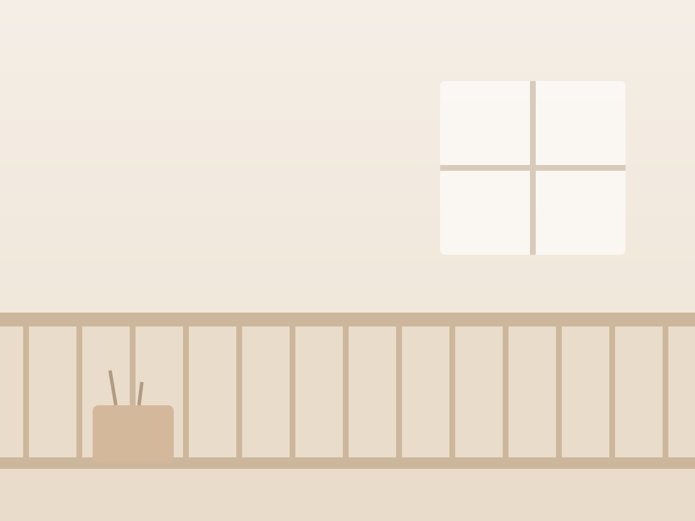
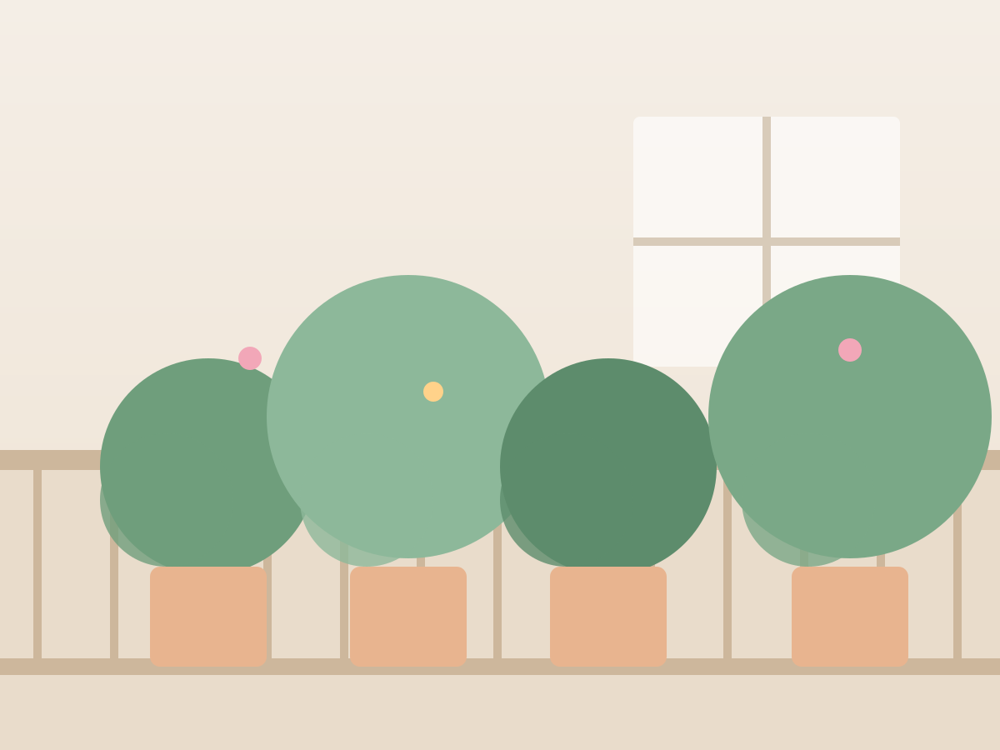
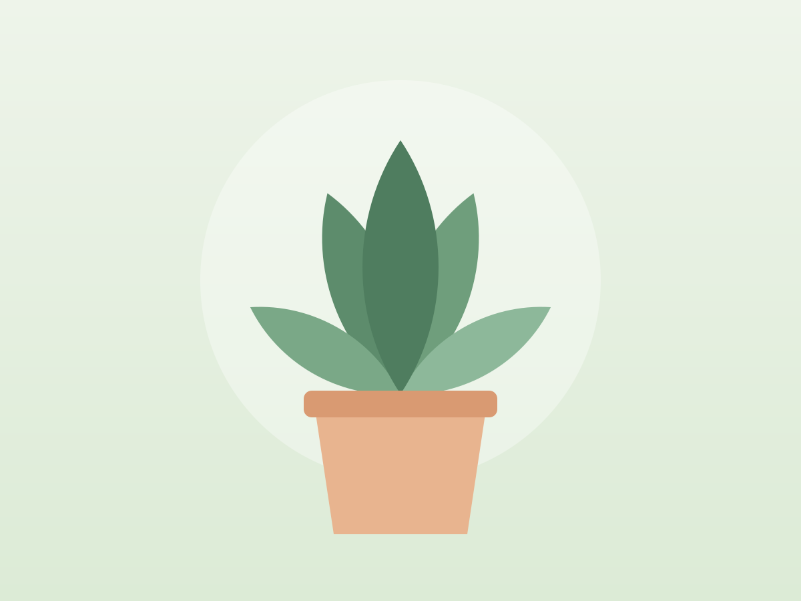
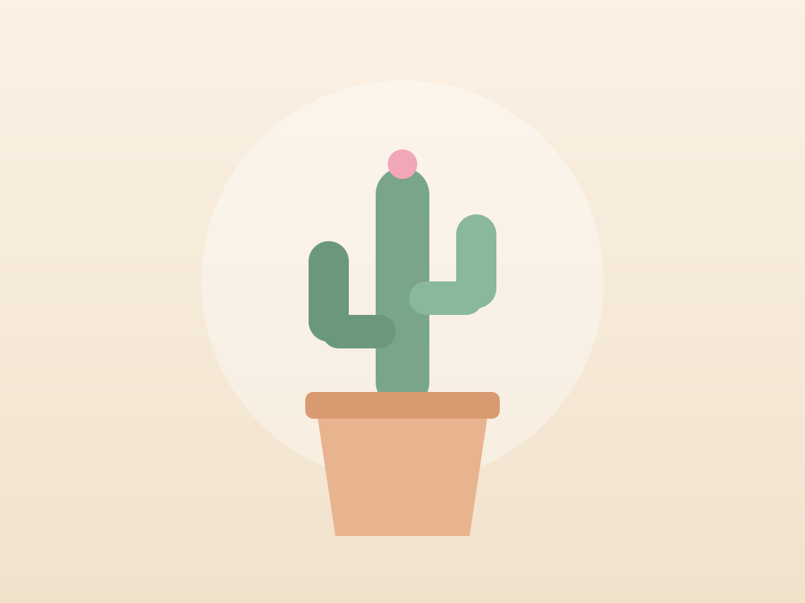
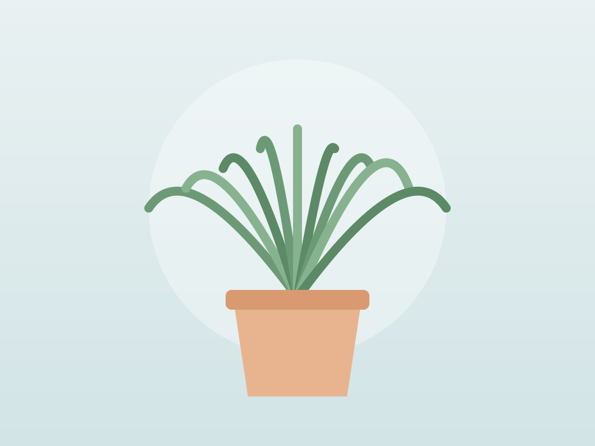

Verdure IA diagnostic par photo
Le balcon qui pousse tout seul.
Chaque saison, nous composons, livrons et installons des plantes adaptées à votre exposition. Des capteurs vous disent quand arroser, et seulement quand.
💧 Humidité 64 %
☀️ 6 h de soleil
Verdure IA
Une photo du balcon. Un plan en 30 secondes.
Démo en direct
Voici mon balcon : plein nord, 4 m², pas mal de vent.
Verdure IA
Plein nord et venté : fougères, heuchères et lierre panaché, dans des pots lourds. Je prévois 9 plantes, un arrosage tous les 6 jours. Formule Balcon, 39 € par mois.
Le diagnostic, étape par étape
- Détection de l'orientation sur la photo
- Prévision de lumière sur 24 h
- Choix parmi 340 plantes
- Plan d'implantation
Vos plantes vous écrivent
« Le basilic a soif, j'arrose ce soir. » Une phrase, pas un graphique.
Après un an
97 %
des plantes installées sont encore en vie. La moyenne nationale est de 60 %.
Capteur 2 · humidité du sol
Arrosé juste avant la soif
Avant / après
Six mètres carrés, une saison.
Faites glisser la poignée : le balcon de Camille, à Lille, avant et après l'installation de printemps.


La sélection d'automne
Retournez une plante.
Au dos de chaque carte, ses besoins. Survolez ou touchez pour la retourner.

Monstera
Monstera
- Lumière douce
- Arrosage tous les 8 jours
- Aime la brume

Cactus fleuri
Cactus fleuri
- Plein soleil
- Arrosage tous les 20 jours
- Fleurit en mai

Fougère
Fougère
- Mi-ombre
- Terre toujours fraîche
- Parfaite au nord
Comment ça marche
Quatre étapes, zéro plante perdue.
- Le diagnosticUne photo du balcon et sa boussole suffisent.
- La compositionNotre paysagiste choisit plantes, pots et terreau.
- L'installationLivraison en vélo-cargo, installation en une heure.
- Le suiviLes capteurs préviennent avant que la plante ne souffre.
Impact de nos balcons
18400 m²
végétalisés depuis 2023 · évolution par mois
avr.maijuinjuil.aoûtsept.oct.